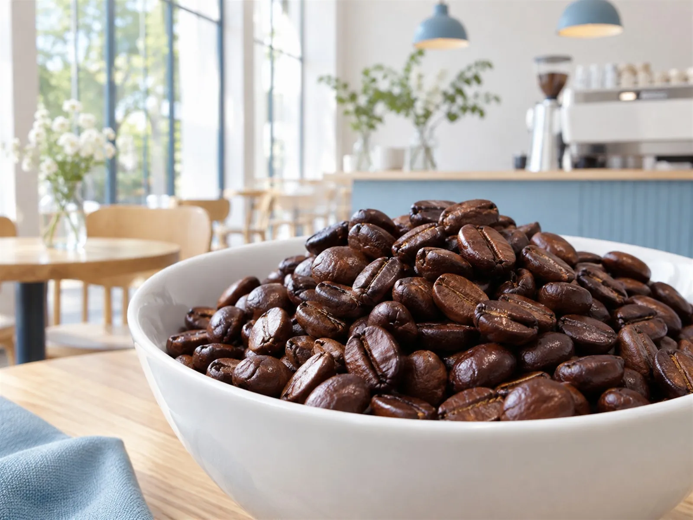

CONCEPT
珈琲が紡ぎだす、
暮らしの当たり前
街と珈琲は、名古屋市南区呼続、名鉄呼続駅のすぐそばにある、自家焙煎コーヒーとおやつのお店です。 コーヒーを通じて、人と人がつながる場づくりもしているカフェと紹介されています。
Machi to Coffee
ホームページには、「扉を開ける前から、もう少しだけ ゆっくりしたくなる。」という言葉があります。人と人が無理なく顔を合わせられる、街の余白のような場所です。
酸味をほとんど感じない、苦いけどクリアなコーヒー コーヒーイベントの出店者紹介（2026年9月）より
深煎りなのに、重たくない。毎日の暮らしの中で飲みたくなる一杯です。
